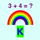

 Kindergarten Math Drill
Privacy Policy
We do not collect personal information.
Description
This is a simple math drill but with multiple reward animations. There is no sound, no reading requirement,
no keyboard entry (only button clicks). There are no ads.
The app starts with addition of numbers 1 through 5, then progresses to numbers adding up to 10,
subtraction, missing addend, sequences, and greater-than/less-than.
The child can view her number of correct answers, shown with an emoji for each one.
If the child enters an incorrect answer, a hint image appears. After 3 incorrect answers, incorrect answer buttons
begin to be disabled in each further incorrect answer until only one is left.
On a settings page (for adults but with no restrictions) children may be added by name and assigned
a level 1 - 3. The name, level and the number of correct answers are stored on your device for future
sessions.
Instructions for the Adult
On first running the app, there is the option of adding a player. Later the wheel at the bottom of the home page
opens a settings page. Here players can be added or deleted. There are 3 levels of increasing difficulty,
and a level can be chosen for the current player. The clear-settings button sets the number of correct answers
to zero and the level to 1 for the current player.
Instructions for the Child
On the home page, choose your name if it's not already selected, or have an adult add your name.
Click the green "Go" button, and look at the question. Click one of the green buttons with the answer.
If the answer is correct you can click the green arrow at the bottom to see the next problem.
If the answer is incorrect, help will be provided. Once you have at least one correct answer,
You can click the gold button at the bottom to see an emoji for each correct answer. The "Back"
button at the top returns you to the problems.